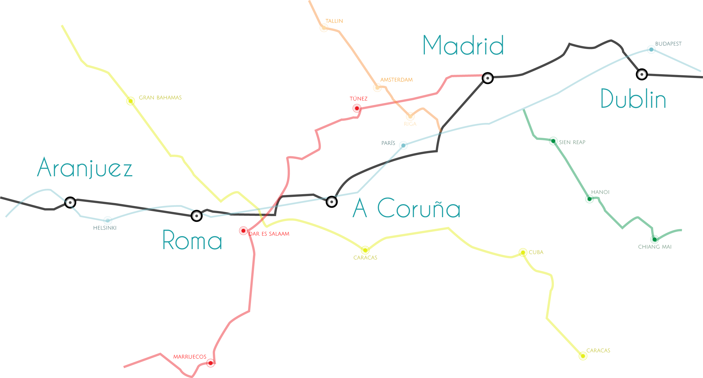
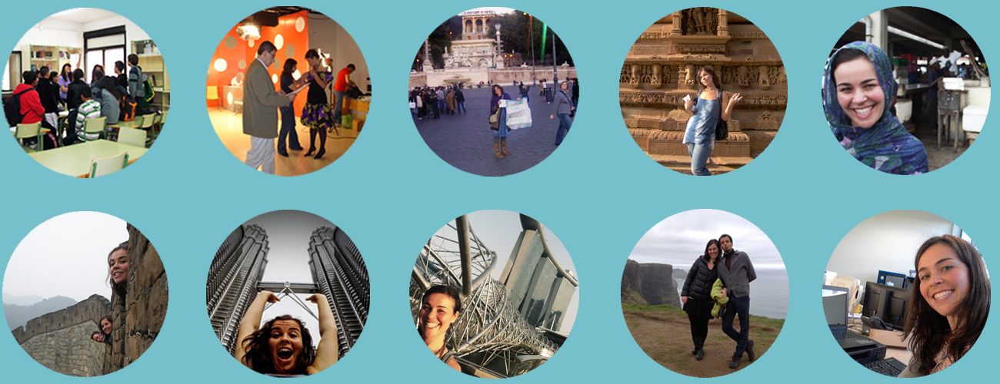

My map
Anywhere you live or any place you visit makes you in somehow. My professional growth goes hand-in-hand with my comings and goings,
with every single city where I have lived some experience and where I have learnt things, in and out of the office.
I am going to tell you what I have done in Digital Marketing, Communication and more sectors, tracking my footprints since I left
the nest in Coruña, my home town in Spain.

ARANJUEZ
(2002-2007)
The university helped me to understand that you can´t learn everything from books.
ROMA
(2006-2007)
Inspiration and beauty everywhere. I wish to be an "Erasmus" again.
European Community Action Scheme for the Mobility of University Students
(Erasmus)
A CORUÑA
(2007-2009)
Going back home
The return to Galicia was linked to journalism and reunions.
EXPERIENCE
El Ideal Gallego
A little short break for something more personal
A perfect day is: wake up and have a hot latte with toasts while I watch a series and then take a bike ride and have a nice chat with someone interesting. The holidays of my dreams; the more different place the better, where I can meet local people and be surprised by something unusual and unknown. The best city to live in...Madrid. The best lace to return back to, A Coruña. The place where I wish to live for a year, Bombay.

I haved worked in many different places. Companies where I have heard people yelling, where I was asked to do things for yesterday and where I had to contribute even with the toilet paper. I also know the opposite site. Libraries with funny children running around and colourful offices with colleagues from everywhere where I learnt something new everyday. Sometimes I regret not to have studied IT as everything would have been easier, but I had missed too many things...
MADRID
(2009-2012)
The online world started knocking the door.
Madrid got me in contact with Teaching and Online Communication.
Máster en Formación del Profesorado
(UCM)
Web 2.0 and tools for the Community Manager
(Innovation & Entrepreneurship Business School))
Social Media: social media, monitoring and crisis management
(IEBS)
Positioning and Online Marketing: SEO, SEM and Web Analytic
(IEBS)
EXPERIENCE
Activa
Cultural Actex
Kedin.es
Iandê Oca
DUBLIN
(2013-now)
Without Ireland I wouldn´t be what I am today.
This coutry linked me with the world and it motivated me more than any other place ever.
EXPERIENCE
Covidien
Google Maps
Volunteer Centre Dun Laoghaire
Wall Street International
Ecovolt
Contact